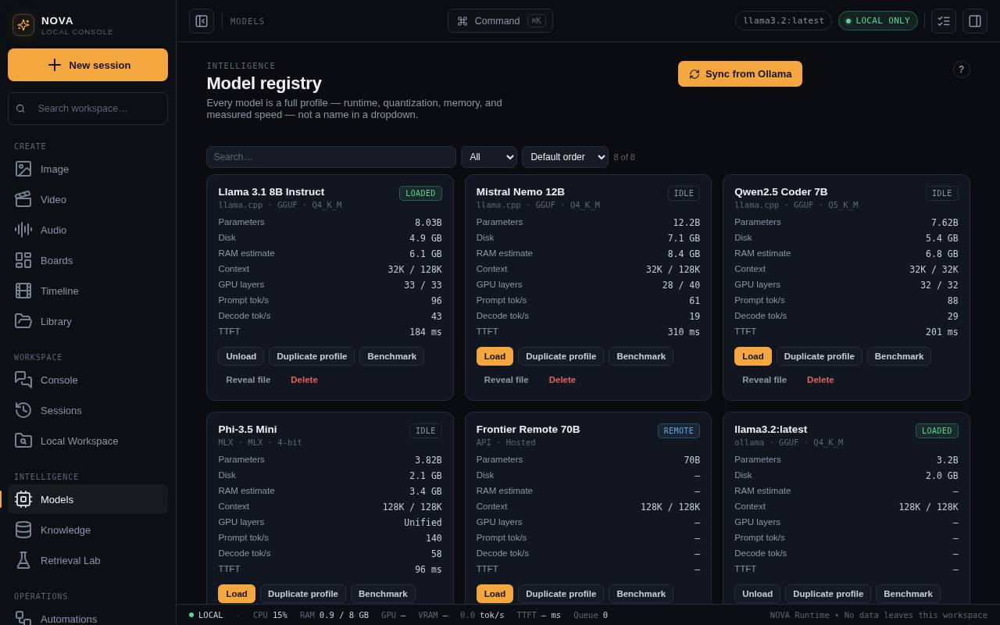

Models
Sync models from Ollama, load and unload them, benchmark speed, and see which models passed NOVA's coding checks.

Get models
NOVA uses the models you have in Ollama. To add one, pull it in Terminal, for example:
ollama pull llama3.2
ollama pull qwen2.5:7b
ollama pull nomic-embed-textThen press Sync from Ollama in Models. NOVA adds or updates a card for each model. The first sync after installing replaces NOVA's example models with your real ones.
Load, unload and benchmark
- Load asks Ollama to keep the model in memory, so the first answer comes faster. Unload frees that memory.
- Benchmark runs a real generation and records time to first token and tokens per second.
- Values Ollama does not report (for example some GPU figures) show as unavailable rather than estimated.
Qualifications
Some jobs need a model that has passed NOVA's checks first. Code planning in Local Workspace uses only models that passed its coding trials, so a small model cannot quietly produce broken edits. A model's card shows which checks it passed.
Choosing a model
| For | Try |
|---|---|
| Everyday chat | llama3.2, qwen2.5:7b |
| Code changes, Build with NOVA | 7B or larger, for example qwen2.5-coder:7b |
| Images in chat | llama3.2-vision, llava |
| Knowledge indexing | an embedding model such as nomic-embed-text |
Larger models answer better but need more memory and are slower. The status bar shows memory in use.